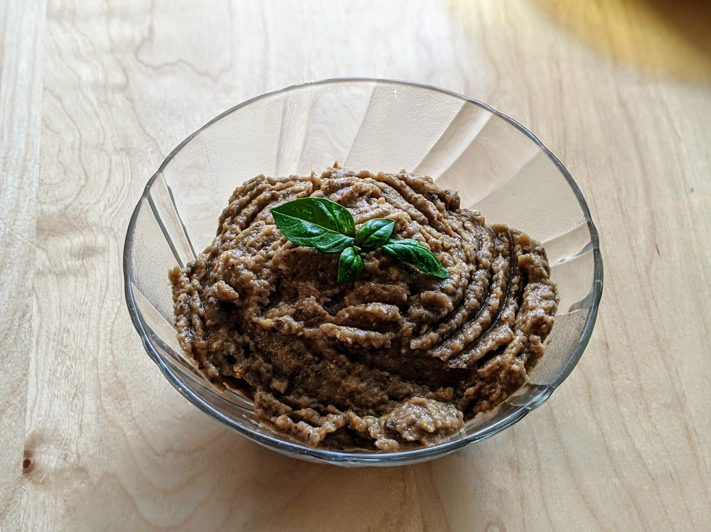

Caviar d'aubergines

Pour 8 personnes :
- 4 aubergines
- 1 tomate
- 10cl d'huile d'olive
- 4 petites gousses d'ail
- 1 citron
- Sel, poivre
- Préchauffer le four, thermostat 6 (180°C)
- Couper les aubergines en deux dans le sens de la longueur, virer les pépins, les mettre au four une demi-heure.
- Au bout d'un quart d'heure, rajouter dans le four la tomate coupée en deux et épépinée.
- Sortir les légumes (le premier qui me dit que la tomate est un fruit je le tabasse) du four, les éplucher, les mettre dans un récipient quelconque, rajouter l'ail écrasé (pour écraser de l'ail, une solution est de le laisser quelques minutes dans l'eau bouillante pour que ça devienne tout mou, mais au pire tu te contentes de le hacher, ça va très bien).
- Écraser le tout avec une fourchette pour que ça prenne une consistance honnête. Au pire, faire ça au mixer, on s'en tape, personne ne le saura.
- Verser l'huile d'olive en mince filet et mélanger à la fourchette comme pour faire monter une mayonnaise (bon, en fait, ça monte pas hein, mais c'est genre).
- Saler, poivrer généreusement en goûtant au fur et à mesure. Rajouter le jus de citron, mélanger encore.
- Mettre au frigo, et servir très frais sur du pain (de campagne de préférence) grillé.